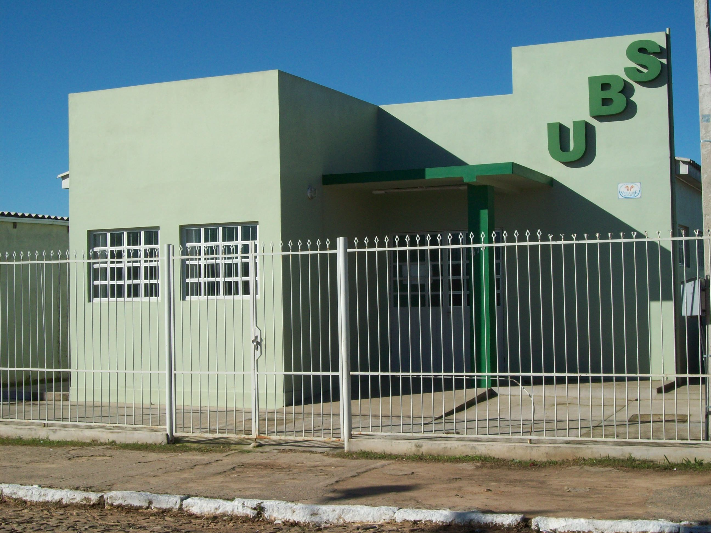

puxar a opção escolhida na especialidades.html
CEO SANTANA (resultadodabuscaunidade)

ESPECIALIDADE (especialidade que essa ubs presta)- Lista
AV. BRAZ LEME, 2945 - SANTANA - CEP: 02022-011 (endereço)
Telefone(s): 3229-8192, 3229-8563. (Telefone)
Funcionamento: Segunda a Sexta: 7h às 19h.(Horário de Atendimento)
Não se esqueça de levar RG e cartão do SUS.